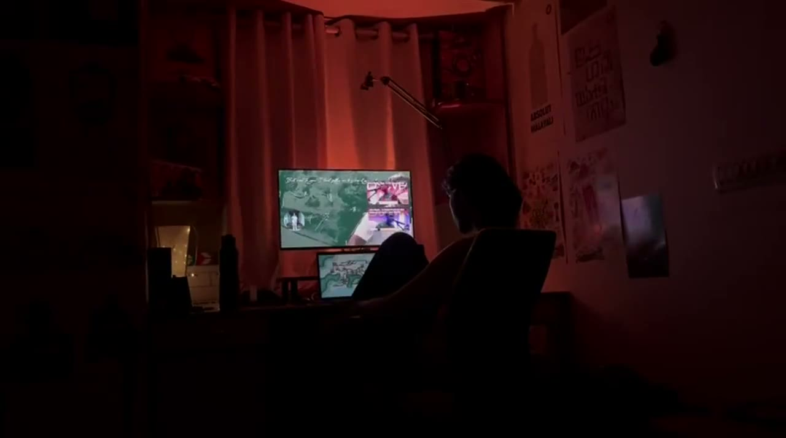
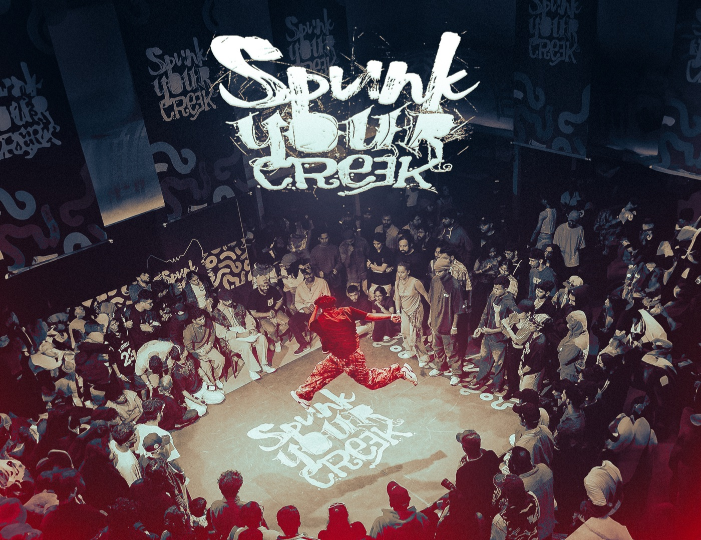
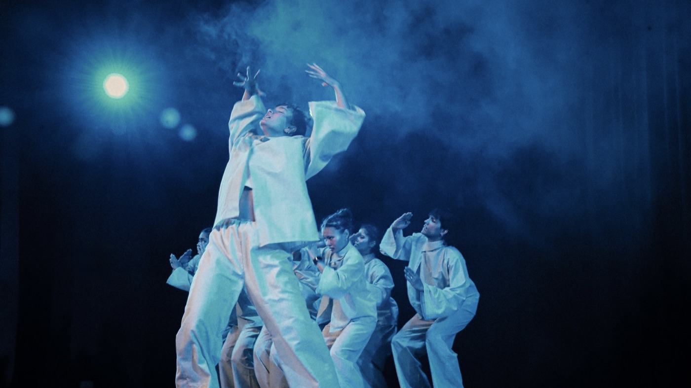
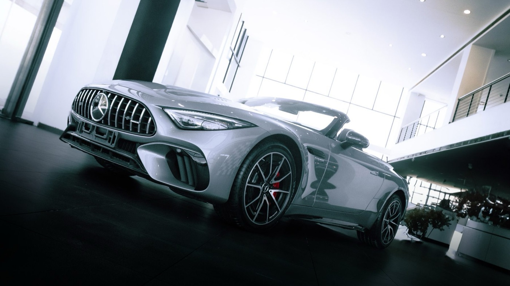
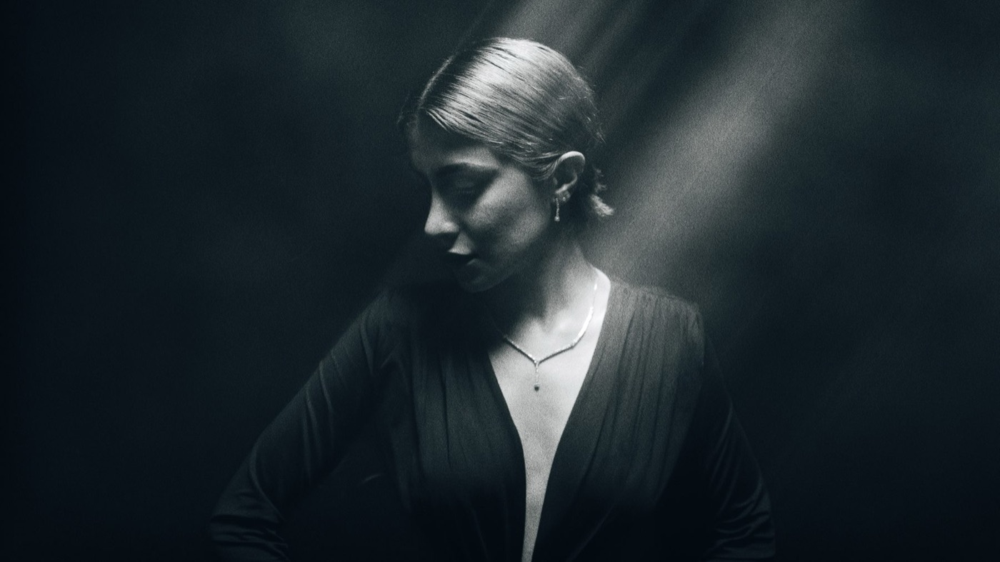

(Aspiring Filmmaker — Visual Storyteller)
I chase the moment just before something breaks, and hold it still long enough to feel it.
Selected




…and the page carries on from here
scroll
progress 0.00